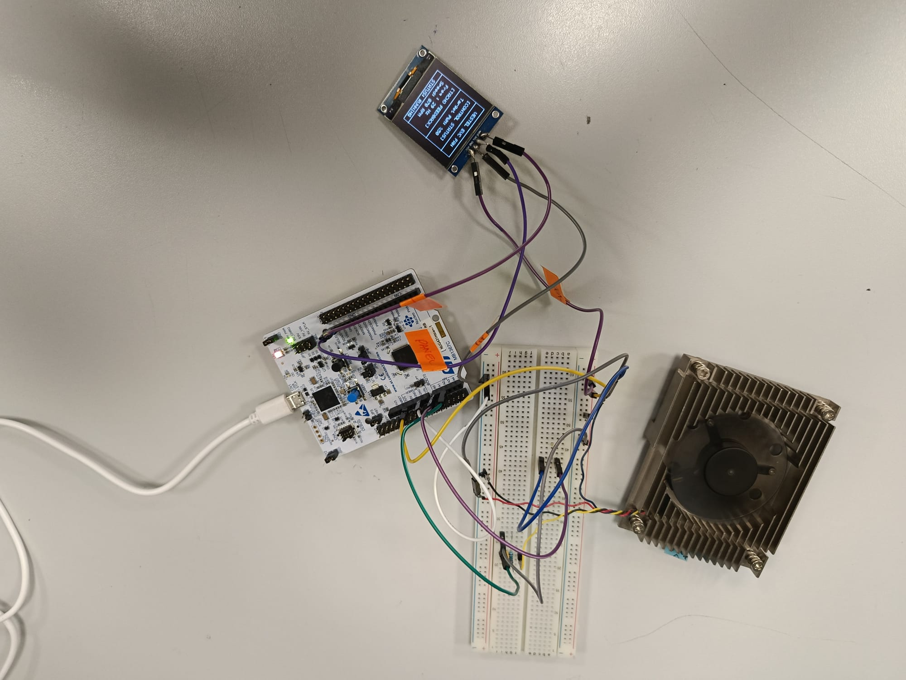
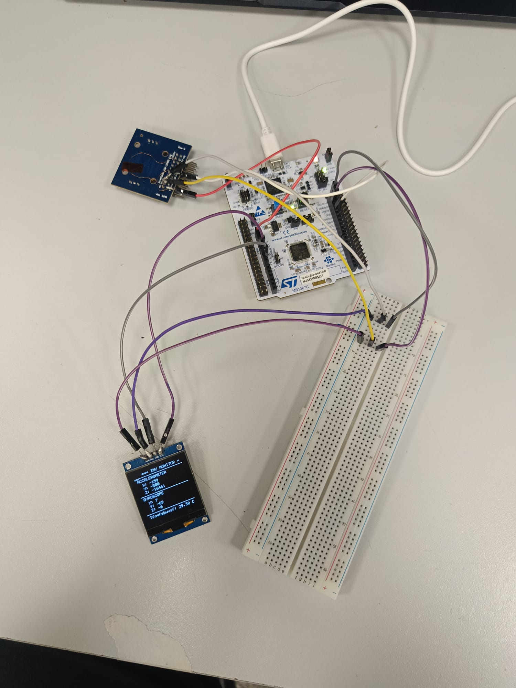
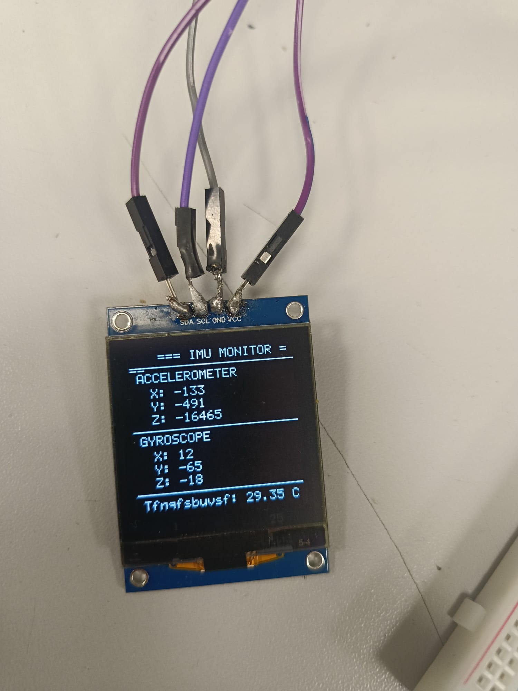
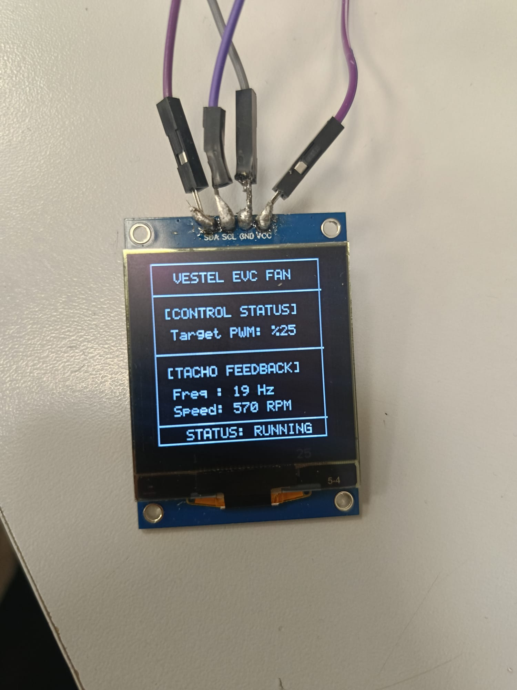
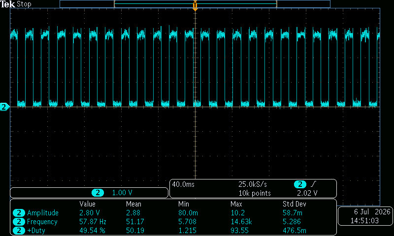
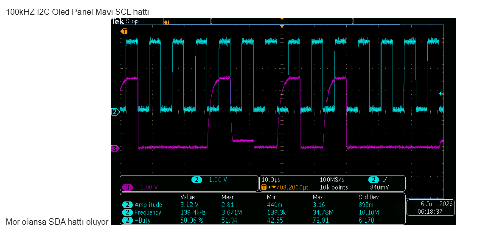

01 / EMBEDDED
STM32G4 PWM Fan Monitor
Hardware PWM actuation with timer input capture, tachometer feedback, RPM calculation and SH1107 OLED telemetry.
View repository ↗I build hardware-oriented systems across embedded firmware, PCB design, power electronics, control and robotics — with an emphasis on measurable engineering evidence.
Electrical & Electronics Engineering student focused on embedded hardware, power electronics, PCB design and signal integrity. My work spans STM32 firmware, peripheral integration, real-time sensor acquisition, converter design, oscilloscope-based validation and autonomous systems.

Hardware PWM actuation with timer input capture, tachometer feedback, RPM calculation and SH1107 OLED telemetry.
View repository ↗
Register-level SPI communication, burst sensor acquisition and real-time OLED visualization.
View repository ↗
14-byte burst acquisition, accelerometer/gyroscope processing, moving-average filtering and OLED telemetry.
View repository ↗Custom multi-rail power distribution board for motors, microcontrollers, sensors and laser subsystems, with protection, grounding, thermal and current-carrying constraints.
ONGOINGCapstone autonomous mobile robot using A* global planning, Dynamic Window Approach, PID speed control and LiDAR–odometry integration.
ONGOINGAnalog readout converting small capacitance changes into a repeatable DC output using AC excitation, discrete transistor amplification and AC–DC conversion.



Worked across STM32 peripheral integration, SH1107 display development, ICM-20601 I²C/SPI integration, power-management blocks, oscilloscope validation, EMI investigation and high-speed PCB design practices.
Developed BMI323 IMU firmware across STM32, Arduino and nRF52 platforms, including register-level I²C/SPI, interrupt-driven motion detection, BLE telemetry and SD-card logging.
C · C++ · STM32G431RB · ATmega328P · nRF52 · Raspberry Pi Zero W
I²C · SPI · UART · BLE · PWM · ADC · Timers · Interrupts
Buck Converters · LDOs · MOSFET Gate Driving · Op-Amps · BJTs · Filters
Altium Designer · Controlled Impedance · Differential Pairs · Length Matching · Crosstalk · EMI/EMC
STM32CubeIDE · LTspice · MATLAB · Oscilloscope · Signal Generator · Near-Field Probe · Git
Open to embedded systems, hardware design, PCB, control and robotics opportunities.